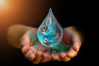

¿Qué es el agua?
El agua es una molècula formada por dos àtomos de hidrògeno y uno de oxìgeno (H2O). Es esencial para la vida y se encuentra en la naturaleza en estado lìquido,
sòlido (hielo) y gaseoso (vapor).

- El agua cubre la mayor parte del planeta
- Es el ùnico compuesto en los tres estados:En la tierra,el agua existe en estado lìquido(ocèanos,rios, lagos).
- Expande al congalarse: A diferencia de la mayorìa de las sustancias, el agua se expande cuando se congela, lo que hace que el hielo flote sobre el agua liquida.
- Tiene una alta tensiòn superficial:Esto permite que ciertos insectos caminen sobre el agua sin hundirse.
- El cuerpo humano tiene mucha agua: Alrededor del 60% del cuerpo humano es agua, y algunos òrganos como el cerebro y los pulmones contienen màs del 70%.
- El agua potable es ilimitada:Aunque hay mucha agua en el planeta, menos del 1% està disponible para el consumo humano.

¿Como nos ayuda el agua al cuerpo humano?
- 1.Hidrataciòn y equilibrio.
- 2.Eliminaciòn de desechos.
- 3.Lubricacion de articulaciones.
- 4.Funciòn cerebral y energia
- 5.Regulacòn de la temperatura corporal.
- 6.Protecciòn de òrganos y tejidos.
agua